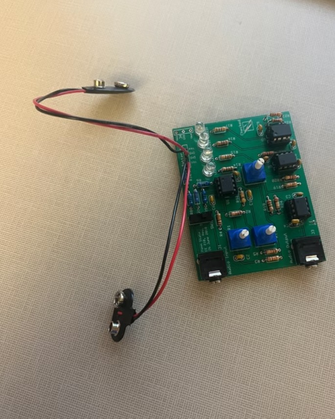

Projects

Offline Smart Doorbell (Ring Alternative)
Built a fully offline smart video doorbell system as a cost-effective alternative to commercial products like Ring, eliminating the need for cloud access or subscription fees. Integrated a Raspberry Pi 4 with a camera, motion sensor, microphone, speaker, and local storage, using Python to control hardware and manage event-triggered video recording. Gained hands-on experience in embedded systems, GPIO interfacing, and real-time data handling.
Tech: Python, Embedded Systems, Raspberry Pi

Brief explanation of the project’s purpose and what you learned.
Tech: KiCAD, Microcontrollers, MATLAB